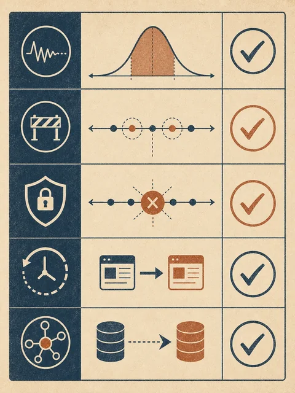
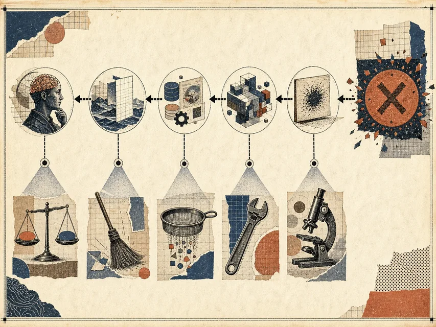
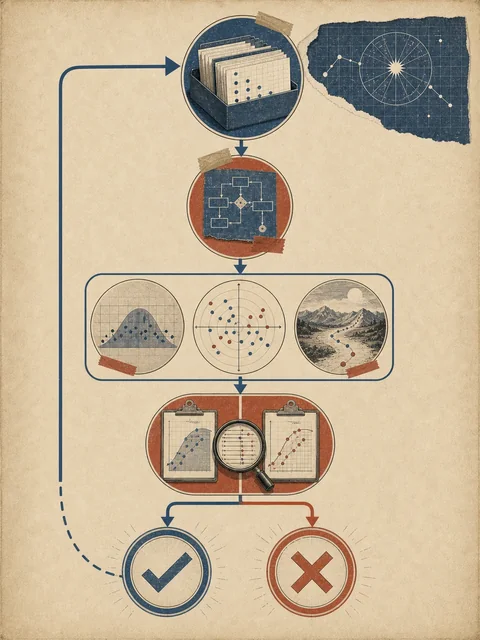

一次成功
清晰的单人录音生成了完整课程笔记
用三段录音测试 lecture-notes Skill
 VER. 2608.1
Built with impress.js
VER. 2608.1
Built with impress.js
本节结束时，你能写出用例、定位失败并用旧样例复测
清晰的单人录音生成了完整课程笔记
再运行多人研讨和损坏录音，主动暴露边界
修改说话人规则，并重跑原来的讲授课样例
测试让经验从感觉变成可以复查的证据
测试用例先写预期，再让实际结果接受检查
三人研讨录音能否保留说话人差异
已授权录音、议程、三人名单；其中一段无法确认说话人
带时间转写；每段含 speaker，不确定时写 unknown
观点不被合并，身份不被猜测，时间位置可以回听
v1 把三位说话人合并成教师陈述；失败首先出现在结构化整理
只增加说话人字段与 unknown 规则，再重跑三类录音
不同用例让流程面对不同的失败可能
清晰单人讲授＋Slides＋术语表 → 原始转写和结构化笔记均可回查
三人研讨且一位身份未知 → 保留 unknown，不猜测
04:20–06:10 音频损坏 → 标记不可辨认并交给教师
增加说话人字段后 → 原单人讲授样例仍然通过
从讲授课换到研讨课 → 步骤保留，输出字段按场景扩展

沿流程寻找最早偏离预期的节点
输入、预期、实际、证据
沿节点从后往前，找到最早偏离
输入、流程、工具、证据或判断
只改最早问题，保留日志并复测

失败分类帮助我们先修最早的结构性问题
字段缺失或任务边界不清 → 先补输入或重写任务说明
节点顺序、依赖或回退不合适 → 检查最早偏离的关系
权限、连接、格式或执行异常 → 保留日志，走备用或请求授权
来源不匹配、过时或存在冲突 → 回到来源检查并停止确定性结论
检查点或人工批准没有发生 → 补检查点或交还责任人
| 用例 | 输入情境 | 预期与证据 | 失败／最早节点 |
|---|---|---|---|
| 正常 | 12 分钟单人讲授，声音清楚 | 转写、笔记、术语与时间位置可回查 | 若失败，先查输入和转写 |
| 边界 | 三人研讨，一位身份未知 | speaker: unknown；观点不被合并 | 结构化整理；禁止猜测身份 |
| 失败 | 04:20–06:10 音频损坏 | 标记不可辨认，保留时间段并交教师 | 转写节点；不能补写内容 |
| 回归 | v2 增加说话人字段后重跑讲授课 | 原有标题、术语和时间位置仍通过 | 旧样例失败则拒绝 v2 |
现象是“把三位说话人合并为教师陈述”，最早偏离在结构化整理；先改字段和停止规则，再复测
单变量修改让改动和结果之间的关系更清楚
先固定一条已经运行过的样例
每轮只改变一个关键变量
比较预期、实际和失败位置
如果同时改五处，即使结果变好也不知道哪一处起作用
为自己的 Skill 写出三条可以实际判定的用例
| 用例 | 输入情境 | 预期／证据 | 通过或停止 |
|---|---|---|---|
| 正常 | 清晰单人讲授录音 | 原始转写、结构化笔记和时间位置 | 术语与内容可回听核对 |
| 边界 | 多人研讨且身份不完整 | 保留说话人差异与 unknown | 不猜测身份；缺名单就请求补充 |
| 失败／接管 | 未授权或关键音频损坏 | 状态、时间段和待决定事项 | 获得授权或教师判断前不得继续 |
研讨录音不再把不同说话人合并
原讲授课的标题、术语和时间位置仍通过
在 v1 上只增加说话人字段与 unknown 规则；三类样例全通过才接受 v2

记录让下一位维护者能够复现同一个问题
下一周将把这些失败记录带入人机分工与组织方案
保留限制，往往比假装流程已经完美更有复用价值
测试和调试把 Skill 的改动连接回样例与证据
正常、边界、失败、回归与迁移
沿工作流找最早偏离预期的节点
一次只改一个关键变量
保留旧样例、失败记录和仍未解决的限制
能复现失败，才有可能真正改进流程